AI engineering is hard.
It shouldn’t be.
Vibe coding for AI engineering. Build production-grade LLM backends without being technical — we handle the hosting and automate the engineering.
Henry — AI engineer at KPMG, in a team of ~12 with 5 PhDs. Production financial automation with AI, and lead on the team’s shared library of internal code infrastructure.
01 — The problem
Companies are cutting AI spend
because the results aren’t there.
Large companies jumped the gun on technology that needed more time to mature — on both the model and the software side. Meanwhile small startups can’t implement interpretable, accurate, cost-efficient AI without spending $200k a year on a single engineer.
Demand for high-quality AI engineering is extremely high. Companies are cutting funding anyway, because they can’t get results at a price that makes sense.
02 — Who feels it most
Technical founders of ‘AI-native’ companies
without AI-engineering experience.
They can ship a product. They can’t ship a reliable LLM backend. And they’re at risk of losing their company within months without one.
The alternative on the table today is a $150–200k AI engineer, a 3-month hiring cycle, and no guarantee of production quality at the end of it.
03 — Why now
The budget shifted to low cost at high scale,
and the models finally allow it.
Two things changed at once. Buyers stopped paying for expensive AI, and the cheap models got good enough to serve them.
Demand moved to cost per run
Large enterprises are cutting AI spend, and so are the custom AI solutions sold to them as subscription products. What they want now is low cost at high scale — which is exactly the axis a frontier-model agent loop loses on.
Flash-class models are mature
Small models are now good enough for segmented, typed tasks. Running inference is dramatically cheaper than two years ago — but only if the system is built to use them, which is the engineering problem we automate.
04 — The solution
Build production systems
while being non-technical.
We offer vibe coding for AI engineering. You describe what you want; we handle the hosting and automate the backend development with AI, using deep production experience baked into the platform.
It hands off to real developers
Vibe-coded solutions can be passed straight to developers, who then have full control over the low-level implementation details. The output is code, not a locked flowchart.
A tenth of a cent per run
We often run inference at a tenth or a hundredth of a cent per run — by avoiding agent-harness overhead and segmenting tasks so Flash-class models can do the work instead of the frontier.
Parity is weeks away, not years
On the feature set that matters, we could close to parity with companies valued around $100M in a couple of weeks of development.
05 — Differentiation
We’re very opinionated about AI engineering,
and it’s built into the platform.
Chain of thought, everywhere
Embedding RAG is uninterpretable — impossible to debug and fix. We emit a chain-of-thought trace at every step. When a test case diverges, we feed that trace back in: quick fixes, often automatic.
Agents only where required
Agents are useful, but in production they’re more variable and expensive, especially on small tasks. Inference while testing our product has often been under a single cent — no 30k-token overhead like Claude Code.
Modular blocks, not blobs
Claude Code is great, but it creates tangled blobs of code rather than separate interpretable steps. We build modular blocks, often from pre-built steps, and cache them for cost efficiency.
Structured responses do three jobs
Typed, structured output catches bugs early, lets smaller models do work the frontier would otherwise be needed for, and saves the user from manually prompting at all — the schema generates the prompt.
By some measurements agents run 37× the cost of a direct chatbot response. Agents stay available in Spine — they just aren’t the default. source →
Structured output makes error tracing and isolation automatic — the key inhibitor to raw Claude Code vibe coding.
06 — Technical deep dive
The product, today.
Two weeks of full-time development, 120k lines of code, a fully chargeable Stripe-integrated product, and a prototype vibe-coding agent. Click any shot to enlarge.
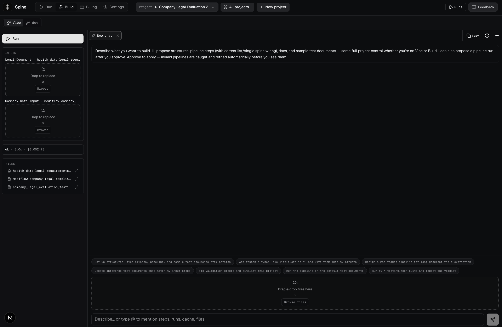
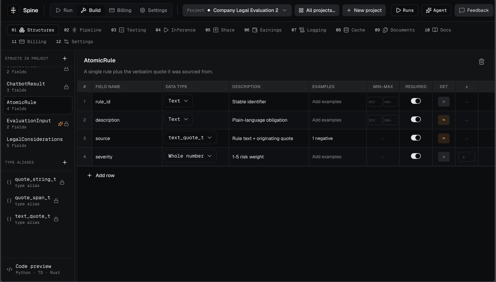
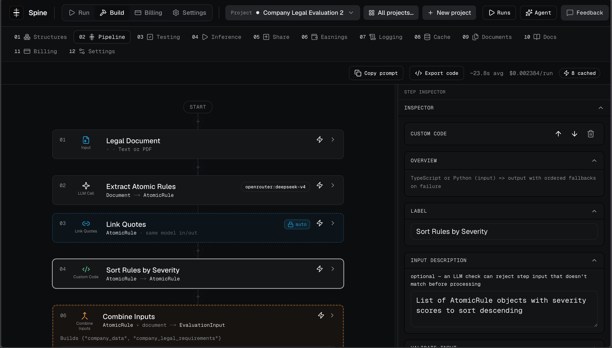
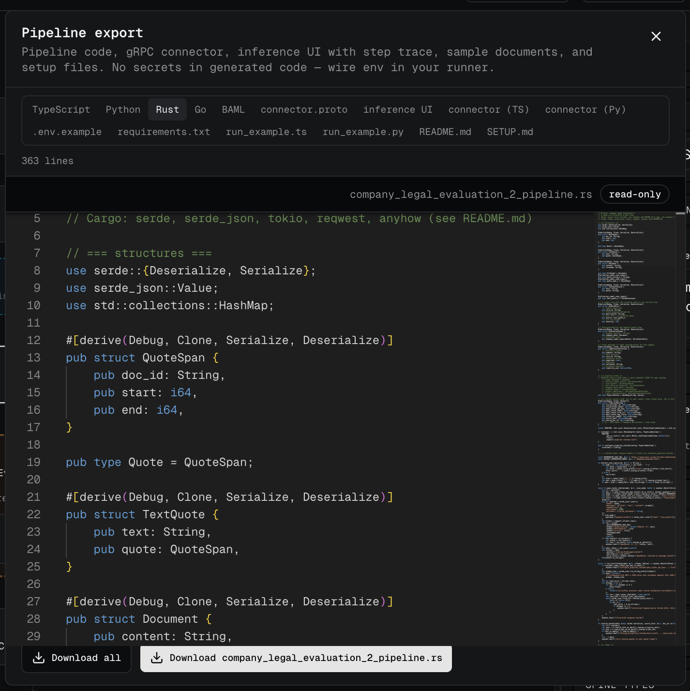
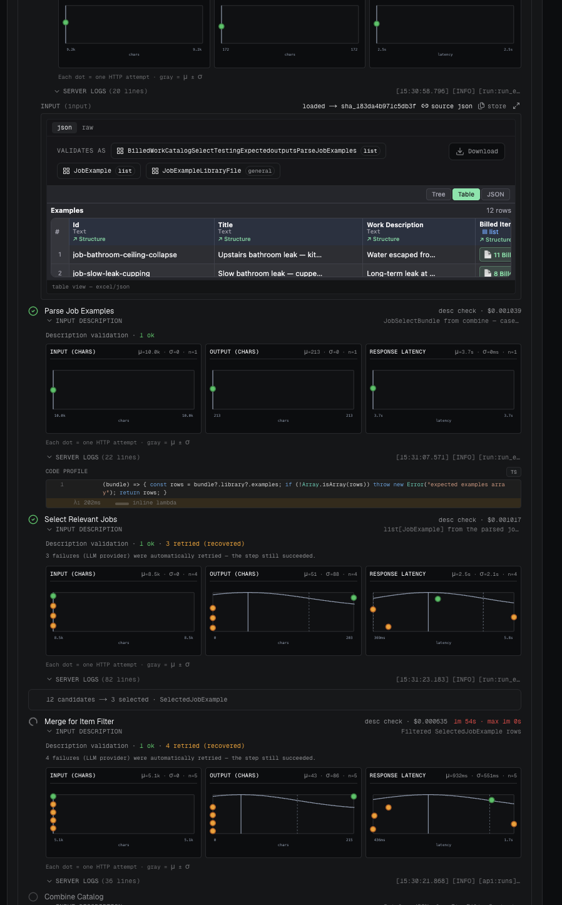
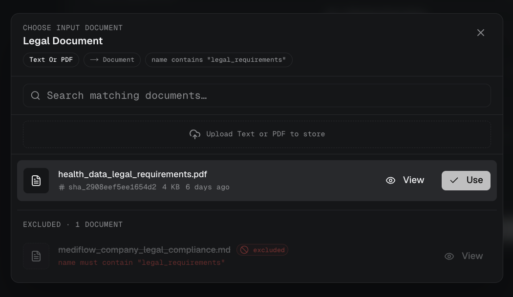
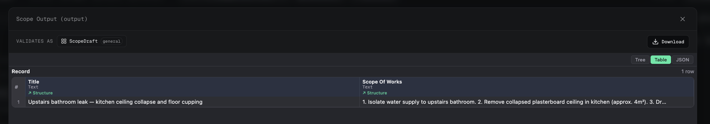
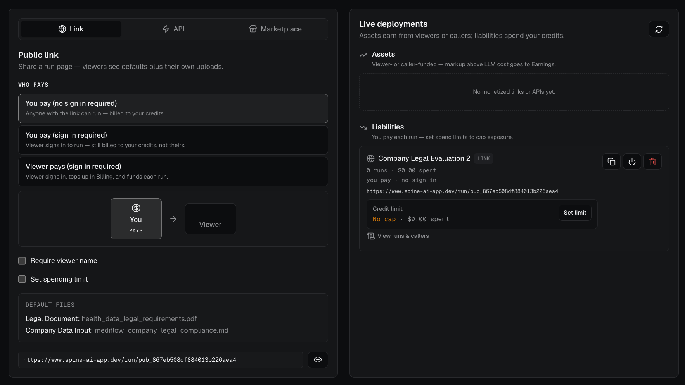
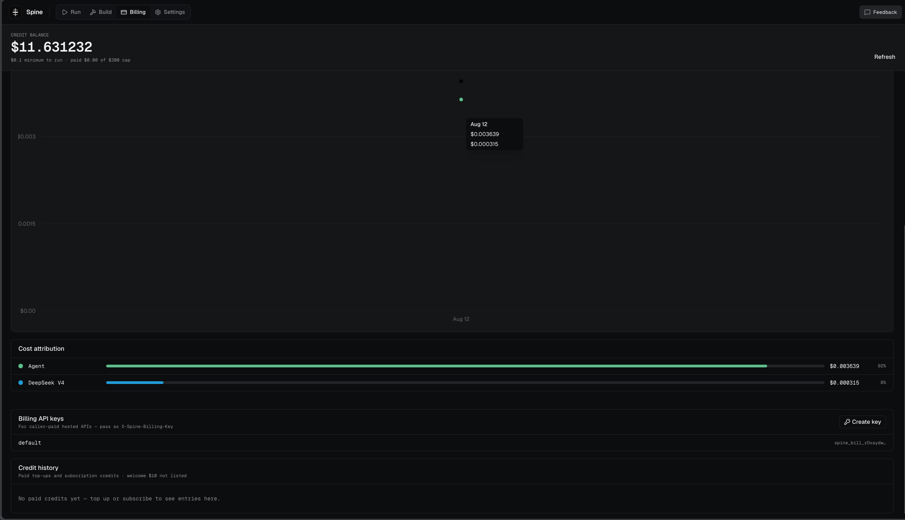
07 — Development progress
Two weeks, 120k lines,
a chargeable product.
Our future development focus is an agent that can guide someone non-technical to a highly reliable backend. Data comes out as Excel natively, and error tracing and isolation are automated by the structured approach.
08 — Competitors
~90 companies mapped.
The leader does $13M ARR.
We’ve conducted extensive competitor analysis and used a subset of their products. The highest-ARR product in the category is Relevance AI at $13M.
Relevance AI — $13M ARR
From my experience at KPMG, I know Relevance AI isn’t used in production and wouldn’t be taken seriously to do that. It’s used exclusively for non-technical client demos — and it still requires the development team to build those demos.
Dify.ai — $3M ARR, $180M valuation
A closer product to Spine. More developer features than Relevance AI, around 450k lines of code, launched roughly 3 years ago. This is the realistic gravity of the category — and the bar to beat.
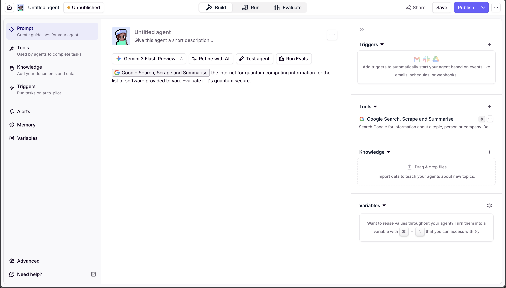
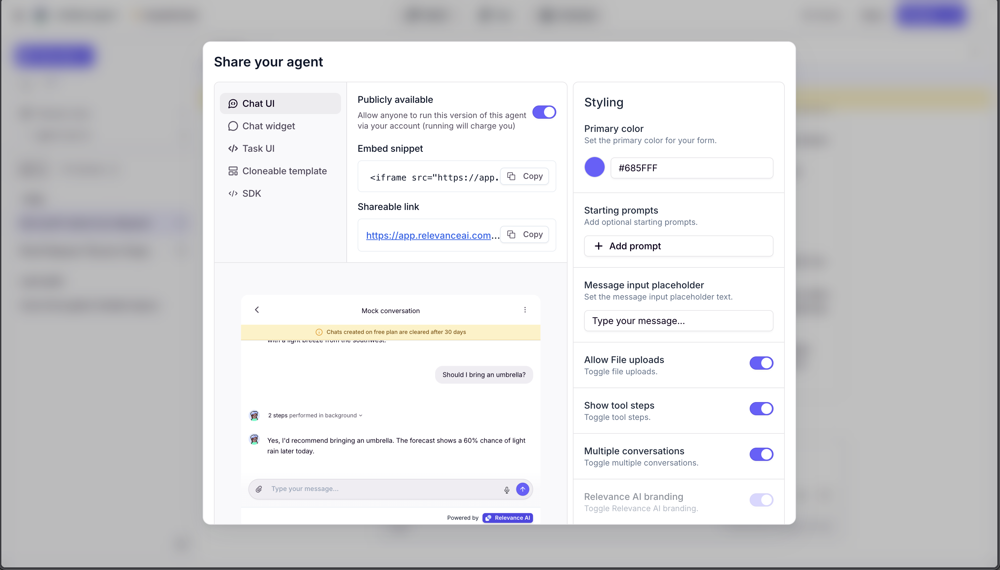
ARR vs. valuation, opacity = similarity, with fitted trend
X = ARR ($M, log). Y = valuation ($M, log). Solid dot = both figures disclosed or estimated directly. Dashed-ring dot = one axis modelled from the ~25.4× median peer valuation:ARR multiple. Dashed line = power-law least-squares fit, valuation ≈ 16.6 × ARR0.83 (R² = 0.47, n = 8). Filtered from the full 52-tool research pass to those scoring similarity ≥ 7/10 against the brief, with n8n removed and Relevance AI added back in. 3 tools with neither figure public are omitted. Hover a point for detail.
Note: Gumloop is plotted at its pre-Series-B $1.1M ARR estimate, which is now stale — it is above $10M following the $50M round. The fit is not re-run for it.
Feature comparison
A small subset of high-level features across the landscape.
| Platform | Visual builder |
Typed schema enforcement |
Multi-language code eject |
Step-level eval harness |
Run observability |
Creator monetization |
Self-host / custom LLM |
|---|---|---|---|---|---|---|---|
| Spine | Yes | Yes | Yes | Yes | Yes | Yes | Part |
| Dify AI | Yes | Part | — | Part | Yes | — | Yes |
| Vellum AI | Yes | Yes | Part | Yes | Yes | — | — |
| StackAI | Yes | — | — | Part | Part | — | Part |
| Windmill | Yes | Part | Part | — | Yes | — | Yes |
| Relevance AI | Yes | — | — | — | Part | — | — |
| Gumloop | Yes | — | — | — | Part | Part | — |
| BoundaryML | — | Yes | Yes | Part | Part | — | Yes |
| Flowise | Yes | — | — | — | Part | — | Yes |
| Langflow | Yes | — | — | — | Part | — | Yes |
| Wordware | Yes | Part | — | — | Part | Part | — |
Full 52-tool research pass, ARR vs. valuation vs. similarity: open the landscape chart →
09 — TAM / SAM / SOM
TAM SAM SOM
TAM $25B · SAM $3.5B · SOM $8M base, $40M bull — ARR by month 36. Split, because the two legs carry opposite risk profiles and a single blended number hides both.
Consumer — the outcome
Prompt-to-app at $4.7B, growing 38% a year. The only leg with demonstrated distribution velocity: Lovable went $200M → $500M ARR in seven months, Bolt hit $40M in five. $100M ARR is 7% of this SAM. Low confidence, uncapped — this is the leg that returns a fund.
Which means Lovable, Replit and Bolt are competitors, not metaphors. They generate apps; we generate backends that run at a third of a cent per document.
Enterprise — the floor
LLMOps ($7.1B), agent platforms ($5.3B excluding the hyperscalers) and AI implementation services ($14B), de-duplicated. Contract revenue: 150–300 teams at $8–15k plus two to four implementations at $200k–1M.
High confidence, capped near the $1–13M peer base rate. This is the leg that means we don’t die.
Areas indicative, not to linear scale.
How the split is derived — and what can kill it ▾
Consumer cut. Prompt-to-app and vibe coding is $4.7B in 2026 at a 38% CAGR, reaching ~$17B by 2030. Mordor’s no-code AI platform print of $4.88B is the same budget line arriving independently at the same place. SAM is that market after a ~65% geography cut for NA / Western Europe / ANZ and a further cut to the builders who need a backend rather than a front end — ~$1.5B. Bottom-up: ~150k reachable teams at a $2–3k blended self-serve price (peers run $59–159/mo) with inference markup on top.
Enterprise cut. LLMOps software at $7.1B (TBRC), agent platforms at $5.3B on the narrow definition that excludes Azure/AWS/Google, and AI implementation services at $14B. These overlap heavily; de-duplicated the layer is ~$20B, growing to ~$68B by 2030. SAM is $20B × ~65% geography × ~15% for buyer and wedge ≈ $2B — we do not win the F500, they buy Databricks or Big Four. Bottom-up agrees: ~40k reachable funded and mid-market teams at a ~$25k ACV is ~$1B of software, plus ~$1B of productisable implementation spend.
Why the base clears the peer mark. The direct peer cohort clusters between $1M and $13M ARR: Dify $3M at three years, Relevance AI $12.6M, Vellum $3.5M, StackAI $2.9M (acquired by Asana for $75M). An $8M base is above Dify’s three-year figure because Dify is pure software with no services leg — $200k–1M implementation contracts are booked revenue, not PLG revenue. That is the whole justification, and it only becomes visible once the legs are separated.
What can kill this. Two things. If founders keep shipping backends in Claude Code, the enterprise tooling leg collapses to the visual-builder niche — already only ~$40–70M of captured ARR. And services compresses the multiple: implementation runs 30–40% margin and managed services 50–65% against 70–80% for software, and investors mark services at 1–2× revenue against 10–25× for software. Services funds the consumer motion; it is deliberately not the growth story.
10 — Traction
Traction
For context: I was planning on pivoting and have come back to this idea, so I haven’t put time into traction until the last day and a half. I’d rather show you the raw findings than dress up the little there is.
Industry connections
NAB, KPMG, and AI-engineering agencies — a phone call away.
Founder interviews — validated pain
Startup founders with severe and urgent pain around AI engineering. The finding that matters: they had not heard of chain of thought or prompt caching — two of the most critical tools in the discipline. That gap is the product.
The disconfirming result, stated plainly
I ran user interviews with two enterprise developers. Both are building solutions from scratch with Cursor or Claude Code. In no way is that a bad choice for them — they are engineers, and the tools are excellent.
The implication cuts both ways. It confirms that our buyer is the founder without AI-engineering experience, not the enterprise developer. And it suggests the valuations in this category may not be backed by real enterprise adoption — which is exactly why we plan against the $1–13M ARR base rate rather than the headline multiples.
11 — Pricing
Free with inference markup first.
Three revenue legs after.
Initially free with an inference markup, to get maximum user feedback. Then a synergistic, multi-pronged approach where each leg feeds the next.
Vibe coding product
Consumer-facing. The name-brand driver — this is what produces distribution.
Enterprise dev tooling
Development tooling and vibe coding for teams already building, monetising the traffic the consumer product brings.
Enterprise consulting
For companies needing enterprise development without a dedicated engineering team. De-risks the early years.
12 — The moat
Make money first,
build a moat later.
Claude eats our product with time — that was my original reason for pivoting. I want to be straightforward about it rather than pretend otherwise.
Today a Claude Code user still has to handle deployment themselves, until Anthropic clones our product. Until then we are the lowest-friction way to engineer a backend.
No product is truly safe from a superintelligent Claude 10. Adapting to market demand is the best plan.
13 — The ask
$200k for 5%,
at a $4M valuation.
We require minimal funding or runway. The product is built, hosted and already chargeable — this is not a raise to reach a first version.
Lovable for AI engineering.
Production-grade LLM backends, built by people who aren’t AI engineers. Hosted, traced, typed, and cheap enough to run.